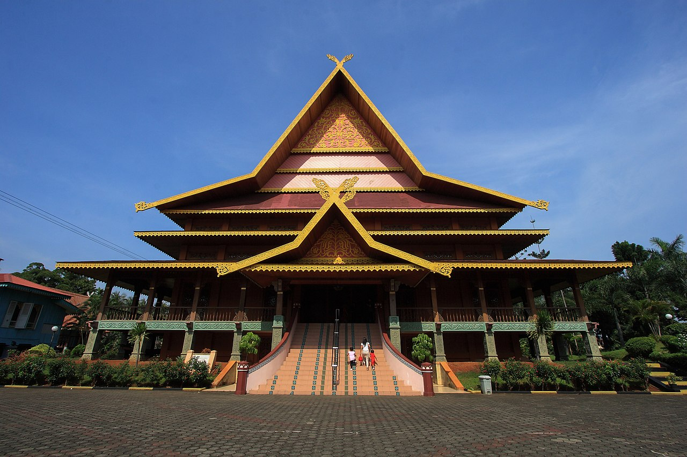
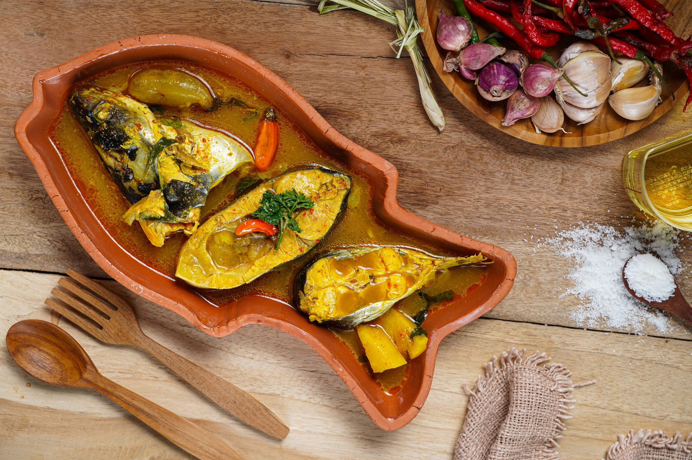
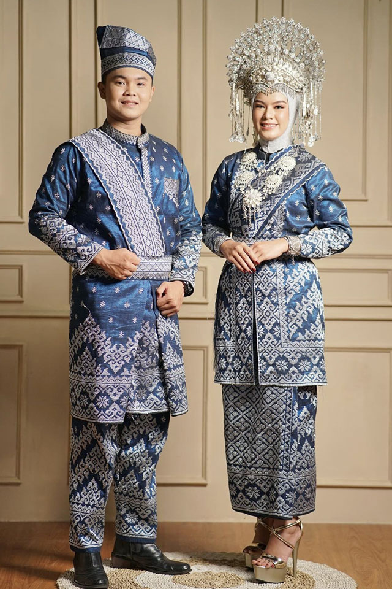
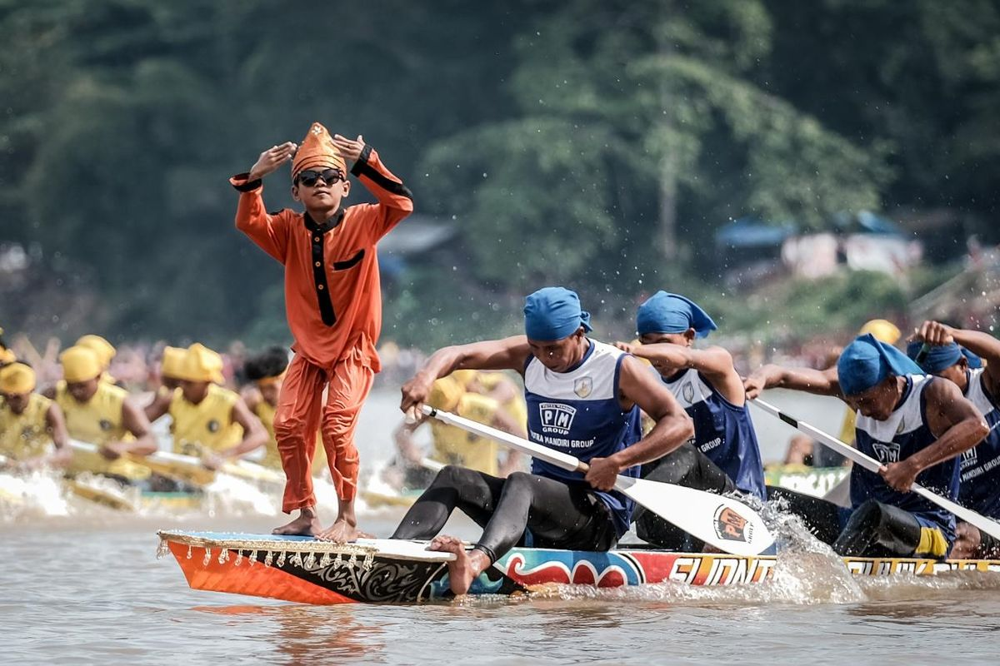
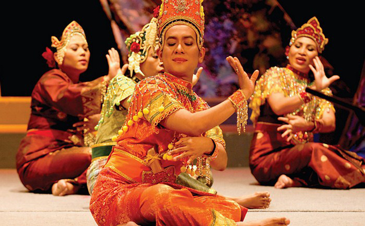
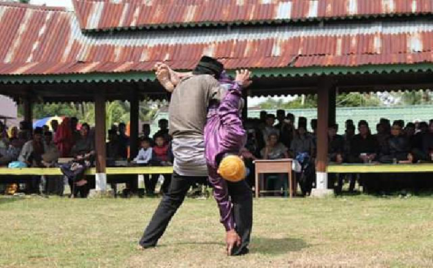
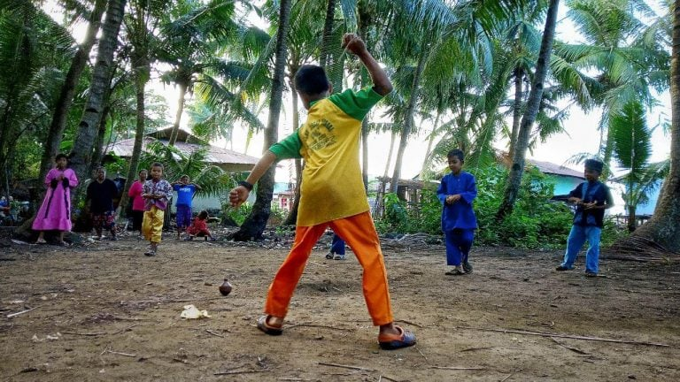

Budaya Melayu merupakan identitas masyarakat yang kaya akan adat istiadat, bahasa, tarian, makanan tradisional, rumah adat, serta nilai-nilai luhur yang diwariskan turun-temurun.
Jelajahi Sekarang
Kebudayaan Melayu merupakan salah satu budaya terbesar di Indonesia khususnya Provinsi Riau. Budaya Melayu menjunjung tinggi nilai sopan santun, agama, persaudaraan, dan gotong royong. Keindahan budaya ini tercermin melalui pakaian adat, rumah adat, alat musik, tarian, serta kuliner khas yang masih dilestarikan hingga sekarang.

Gulai Ikan Patin, Asam Pedas, Lempuk Durian, Bolu Kemojo, Mie Sagu, dan masih banyak lagi.

Baju Kurung, Teluk Belanga, dan Tanjak menjadi simbol kebesaran budaya Melayu.
Rumah Melayu berbentuk panggung yang memiliki ukiran khas serta filosofi kehidupan masyarakat Melayu.
Tradisi
Tarian
Rumah Adat
Kuliner



